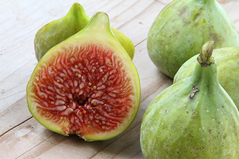
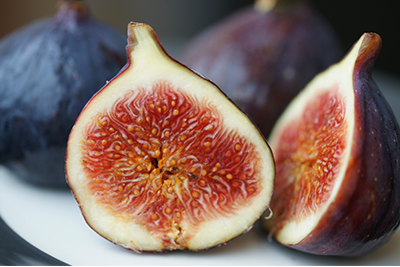
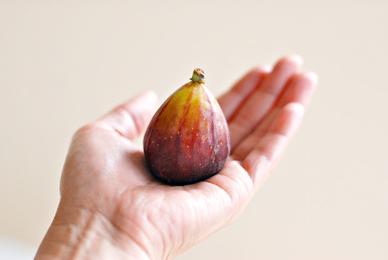
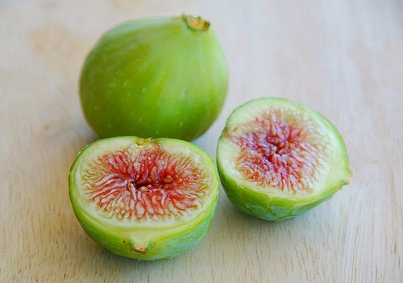
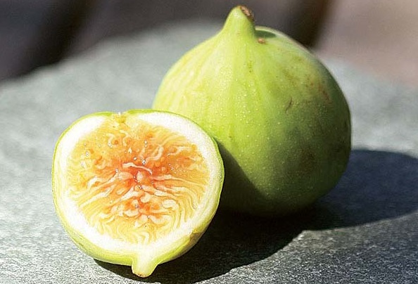

Adriatic Fig
These pale green to pale yellow figs are sometimes called "white figs" for their light color. I've also seen them sold as "candy-striped figs" when striped like the ones pictured here. They have bright pink to brilliant red insides and an extra-sweet flavor. Adriatic figs are harvested in June and again in August.
Black Mission Fig
Black Mission figs are extremely sweet (sometimes they even ooze a bit of syrup) and thus are perfect for serving plain or with yogurt or tangy fresh cheese (such as mascarpone, Fromage blanc, or farmers cheese) for dessert. They have blackish-purple skin and dark pink flesh.


Brown Turkey Fig
Brown Turkey figs have brownish-dark purple skin, a milder flavor than other figs, and are noticeably less sweet than the similar-looking Black Mission figs. Brown Turkey figs work well in salads or in desserts where a sweetener will be used.
Calimyrna fig
Calimyrna figs are comparatively large, with slightly golden skin and a pinkish flesh that has a distinctive nutty flavor. All figs have that nuttiness (which is why they're so good with nuts), but these have a stronger sense of nut about them.


Kadota Fig
Kadota figs is yellowish-green in color and the flesh is especially smooth and silky but not as sweet as other figs. They're good raw (they're fine, really, and if they're the only figs at hand they'll be fabulous!), but take very well to being heated up with something else .